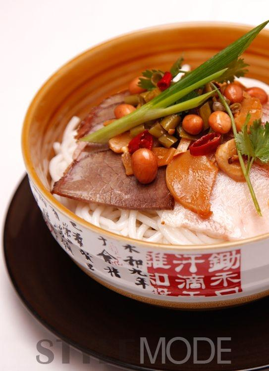
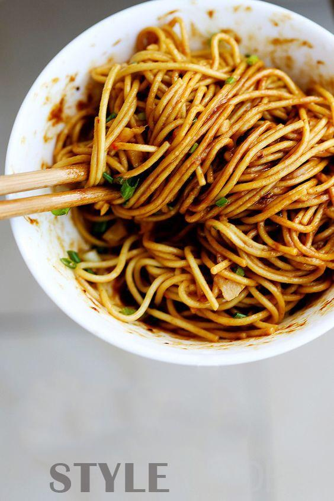
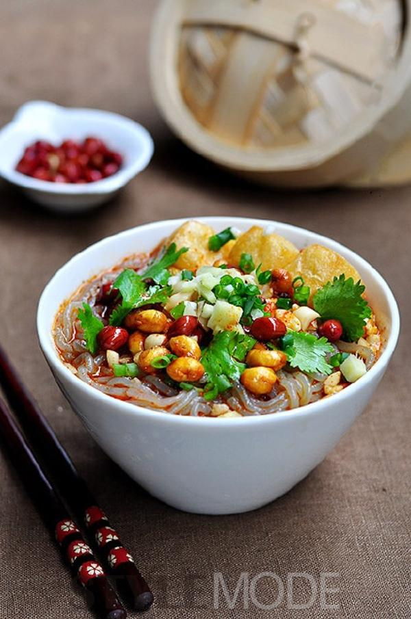

吃多了披萨汉堡，试着想一下，你有多久没吃过豆浆油条了？中国的传统小吃那么多，大家又何必去吃外国的东西呢？今天让我们一起来回忆一下，中国十大小吃，有些传统的东西我们还是要发扬光大！看看这些名小吃，有你家乡的特色嘛？
桂林米粉
桂林不仅山水甲天下，而且米粉也很有名，它圆细、爽滑、柔韧，具有独特的风味。其做工考究，先将上好大米磨成浆，装袋滤干，揣成粉团煮熟后压榨成圆根或片状即成。园的称米粉，片状的称切粉，通称米粉，其特点是洁白、细嫩、软滑、爽口。其吃法多样。最讲究卤水的制作，其工艺各家有异，大致以猪、牛骨、罗汉果和各式佐料熬煮而成，香味浓郁。卤水的用料和做法不同，米粉的风味也不同。
热干面
热干面是武汉最著名的食物之一，是武汉人生活中不可分割的一部分，并成为他们心目中在全国的小吃代表中，占有一席之地的武汉食物代表。面条纤细根根有筋力，色泽黄而油润，滋味鲜美。拌以香油、麻酱、虾米、五香酱菜等配料，更具特色。热干面对武汉人或者在武汉呆过一段时间的朋友来说，它不再仅是一种小吃，而是一种情怀，未食而乡情浓浓，食之则香气喷喷。
山东煎饼

山东煎饼源于泰山，山东煎饼够薄的了，用五谷杂粮为原料制成，这是平民之食——卷上大葱或其它蔬菜，可以吃得津津有味。煎饼原料由五谷杂粮精细研磨而成，既不是纯细粮，也不是纯粗粮，营养丰富，便于人消化，因为做煎饼的原料都带皮壳，含粗纤维多，对消化很有帮助，是城市居民让人担忧的健康状况的一剂良方。
重庆酸辣粉
酸辣粉很早以前流传于四川民间，它取材当地手工制作的红薯粉，味以突出酸辣为主而得名，后来经过不断的演变和调制而正式走上街头，成为大街小巷的一种特色小吃。主原料采用四川民间手工制作的红薯粉在辅以辣椒、醋等二十多种上等调味料，在不添加任何香精、色素的情况下，把酸辣粉的味道演绎的淋漓尽致，吃了叫人流连忘返。
汉中热面皮
汉中热面皮是陕西南部汉中地区著名特色小吃。相传始于秦汉，一般是把大米浸泡后磨成米浆，上笼蒸成薄皮儿，趁热抹上菜籽油，切成条状，依个人口味调入油辣子、味精、精盐、醋、酱油、蒜泥等佐料，拌匀即可食用(当地多热食，称热面皮儿)，亦可置于通风处降温后凉拌(当地称冷面皮或凉面皮)。配菜(底垫子)主要有黄豆芽、土豆丝、芹菜、菠菜等时令小蔬，口感软糯，香辣。不需即时食用时还可以晾干后油炸食用。也有烩，炒等吃法。